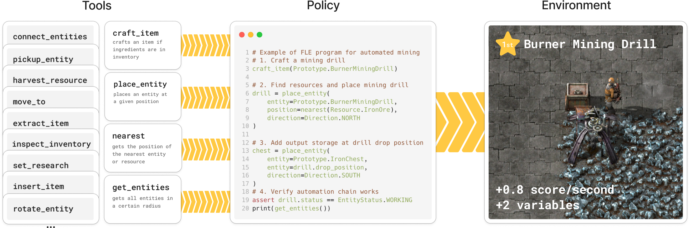

Environment

Agents in FLE aim to optimise factories programmatically. Left: Agents aim to create increasingly efficient factories, advancing through technological tiers to produce more resources per second. Middle: We provide a Python API to Factorio which enables direct interaction with the environment through code. Right: Agents submit programs to the game server and receive rich feedback, enabling them to refine their strategies through an iterative process of exploration and refinement.

Agents develop policies through an interactive feedback loop. Using 23 core API tools, agents compose programs that interact with the environment and observe the results through stdout and stderr streams. The Python namespace allows agents to store variables and define functions for later use, enabling increasingly sophisticated strategies as experience grows. This approach mirrors the way human programmers learn - through iteration, debugging, and refinement based on direct feedback. Agent programs yield both a Production Score (PS) representing the economic value of all items produced, and milestones that reflect technological advancements.
Agents develop policies through an interactive feedback loop. Using 23 core API tools, agents compose programs that interact with the environment and observe the results through stdout and stderr streams. The Python namespace allows agents to store variables and define functions for later use, enabling increasingly sophisticated strategies as experience grows. This approach mirrors the way human programmers learn - through iteration, debugging, and refinement based on direct feedback. Agent programs yield both a Production Score (PS) representing the economic value of all items produced, and milestones that reflect technological advancements.